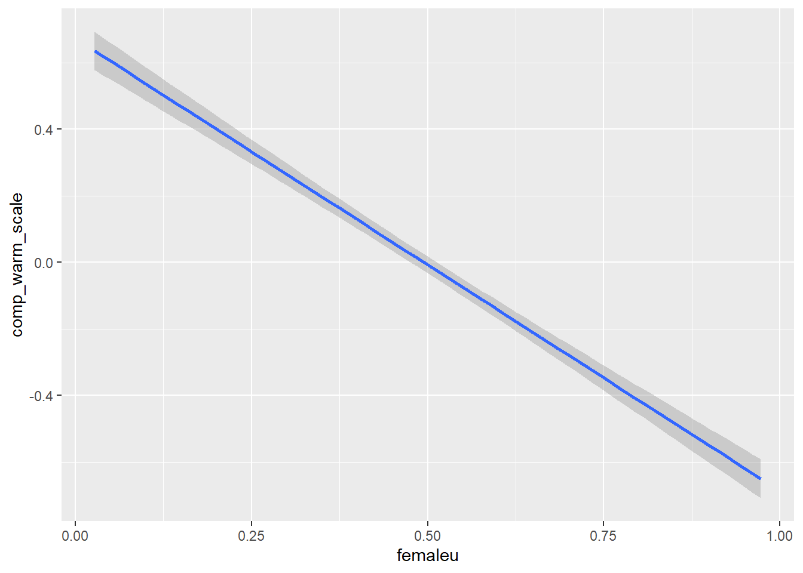
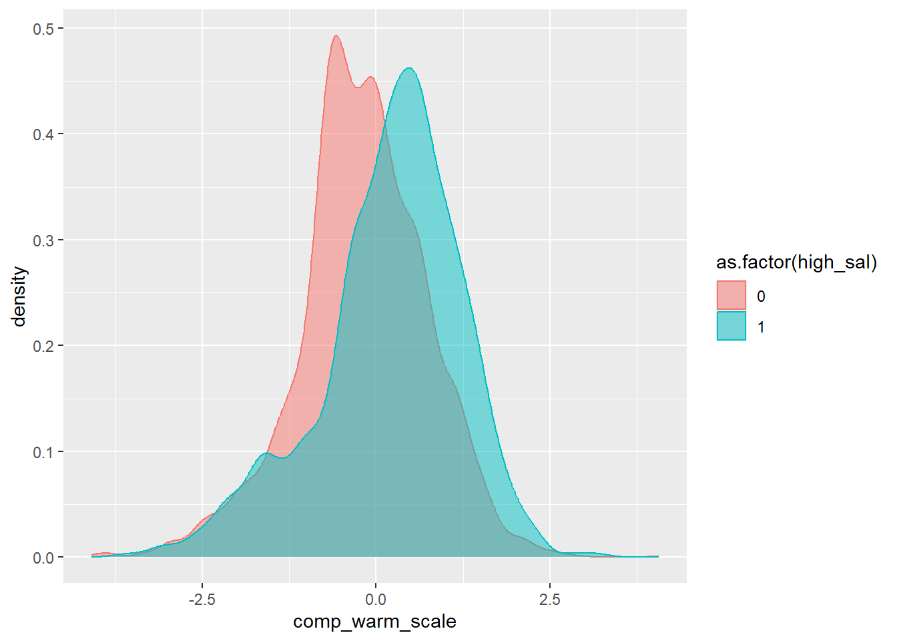
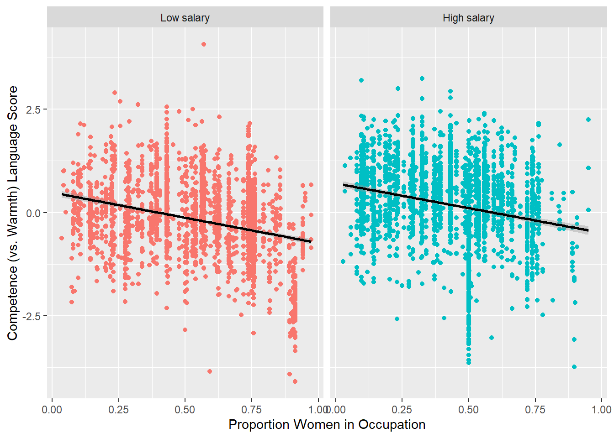

library(tidyverse)
library(tidytext)
library(text2map)
library(text2map.pretrained)Concept distance with word embeddings
Measuring concepts in documents, computationally
Researchers often use content analysis to code for the presence of concepts in documents. This often entails reading through the documents and applying codes qualitatively. This is unfeasible when the set of documents (the corpus) is exceedingly large. An alternative is the dictionary approach, whereby a researcher develops or borrows a dictionary of words that are synonymous with the concept of interest, searches for the presence of these words in the documents, and then counts the number of times those words appear.
The development of large language models (LLMs) now allows for an improved approach. These LLMs have been trained to map the locations of words in multidimensional space based on how those words are used with other words as part of natural language. Based on this mapping, it is possible to estimate where concepts “live” in our broader lexicon. Moreover, these models can be used to estimate how close or how far away a set of words (i.e., a document) is from the concept of interest. This new methodology, called Concept Mover’s Distance (or CMD), was developed by Dustin Stoltz and Marshall Taylor. (See the citations at the end of this tutorial.)
Here I will demonstrate how this works. First let’s read in our libraries. Note that text2map is the package developed by Dustin and Marshall.
Example: Gender stereotypes in job advertisements
People often have stereotypical notions about how women and men are different. Social psychologists have found two especially prominent gender stereotypes: that men are viewed as especially competent whereas women are especially warm. These notions are very much related to how we think about the types of jobs that men and women are especially good at. This helps to explain why men are often in positions of authority in workplaces and women are often employed in care work.
These are problematic assumptions, as women are often highly competent in their jobs and men are often very caring. Nonetheless, these stereotypes not only shape how people think about jobs, they also affect how people are recruited into jobs. This leads to an interesting series of question: to what extent do job advertisements use language that leans into competence and warmth stereotypes? How is this stereotypical language associated with the salary of the jobs and the gender of the people who tend to occupy those jobs?
Along with the help of several collaborators, I gathered, cleaned, and coded job advertisements from the USAjobs database, which is for jobs in the federal government. Below I load in a subset of the data, which contains 5,526 job ads.
load("jobads.rda")Processing the job ads data
The data include a document id (doc_id), a variable containing the lemmatized words from the job descriptions (string_lemma), a variable for the average proportion of women who tend to occupy these types of jobs (femaleu, which obtained from another data source, the Current Population Survey), and a variable that lists the midpoint of the salary range provided in the job ad.
To apply the CMD, we need to create a document term matrix, which creates counts of the presence of every word included the string lemma field across every document. We remove stopwords (meaningless words such as articles like “a”, “an”, and “the”) and words that appear in less than 1 percent of the documents.
dtm_ja <- jobads |>
dtm_builder(string_lemma, doc_id) |>
dtm_stopper(stop_list = get_stoplist("snowball2014"),
stop_docprop = c(.01, Inf))Now let’s look at the dtm. Below you will see the first five rows (documents) and five columns (words). The numbers represent the number of times that a word appears in a document
dtm_ja[1:5,1:5]5 x 5 sparse Matrix of class "dgCMatrix"
serve director office restoration damage
text1 2 1 4 4 4
text10 2 . . . .
text100 1 1 . . .
text1000 . . 1 . .
text1001 . . . . .Loading in the word vectors
The next step is to load the pre-trained LLM from the text2map package. Here we’ll use a model that is based on a massive dataset that contains language from webpages on the internet. The code below loads the data, renames it, and then removes the awkwardly named original object.
data("vecs_fasttext300_commoncrawl", package ="text2map.pretrained")
wv <- vecs_fasttext300_commoncrawl
rm(vecs_fasttext300_commoncrawl) I renamed the object “wv” because it contains a set of word vectors. Each word (represented by the rows), contains values that identify how each word loads on each of 300 latent dimensions (represented by the columns). Below we can inspect a portion of the vector for the word “warm”.
vec1 <- wv["warm", , drop = FALSE]
summary(vec1[1,]) Min. 1st Qu. Median Mean 3rd Qu. Max.
-0.22420 -0.05112 -0.00290 0.00257 0.06510 0.31500 These values are estimates of where the word “warm” lives across a variety of uses of the word. Two words are considered to be in similar space to one another if the values in their vectors are similar to one another. In those cases, the two words are considered to have similar meaning because they are used together as part of natural language.
The LLM contains many more words than those that are present in the job advertisements. Therefore, we will need to align our vectors so that they only include the words from the job ads dtm.
aligned_vectors <- wv[rownames(wv) %in% colnames(dtm_ja), ]Creating concept pairs
The next step is to create a list of terms that comprise our concepts of interest. My research team adapted pre-validated dictionary of competence and warmth words. Below is a subset of that larger list.
pairs <- data.frame(
competence = c("competence","ability","able","active","agency","aggressive","ambitious","assertive","assertiveness","uncompromising","autonomous"),
warmth = c("warmth","kindness","pleasant","hospitable","caring","tender","good","moral","morality","agreeable","team-oriented")
)Obtain closeness estimates
It’s time to estimate the placement of the documents. The get_direction command creates a vector that corresponds to the semantic locations for the pairs. Then the CMDist command applies this vector to the words in the dtm.
To be a bit more precise, the CMDist procedure is attempting to estimate how far a document would have to move across the semantic space to be where the competence concept lives, relative to the distance that it would need to travel to reach the warmth pole.
The result is a score for each job ad that indicates the extent to which the language in the ad is closer to the competence pole (higher values) versus the warmth pole (lower values). Thus, I rename the scores as the comp_warm_scale and join those scores with the original job ads data frame.
directions <- get_direction(pairs, wv, method="paired")
closeness <- CMDist(dtm= dtm_ja, cv = directions, wv = aligned_vectors)
names(closeness)[2]<-"comp_warm_scale"
jobads <- jobads |>
left_join(closeness)Joining with `by = join_by(doc_id)`Variation in stereotype content
Let’s re-examine the jobads data. Note that we have our new comp_warm_scale values connected to those job ads. This variable is standardized so that the mean for the overall distribution is zero. Job ads with higher comp_warm_scale values have more competence language, whereas lower values indicate more warmth language.
glimpse(jobads)Rows: 5,526
Columns: 5
$ doc_id <chr> "text1", "text10", "text100", "text1000", "text1001", …
$ string_lemma <chr> "serve as the director office of restoration and damag…
$ femaleu <dbl> 0.2868435, 0.2868435, 0.3241814, 0.7193393, 0.7193393,…
$ sal_mean <dbl> 185900.0, 105965.0, 158314.0, 112874.0, 100057.5, 9247…
$ comp_warm_scale <dbl> 1.14292473, 1.12873010, -0.05517213, -1.10815313, 0.31…summary(jobads$comp_warm_scale) Min. 1st Qu. Median Mean 3rd Qu. Max.
-4.09343 -0.57247 0.04877 0.00000 0.66695 4.06583 Let’s examine the lowest scoring job description.
jobads <- jobads |>
arrange(comp_warm_scale)
jobads$string_lemma[1][1] "responsible for the nurse care provide to the patient assign to him her the license practical nurse prepare and dispense medication give complete personal and hygienic care and provide assistance with activity of daily live to include move lift and position the license practical nurse also provide assistance with food and fluid intake record of i o's vital sign medication treatment and patient care excellent customer service and communication skill be require"Here we can see lots of warmth language centering on caring for patients and customers.
jobads$string_lemma[5526][1] "manage squadron train program plan organize and overseas all unit level deployment activity perform analysis activity"Here we can see lots of competence language centering on action verbs like manage, train, and organize.
Gender
How might stereotyped language in job ads vary by the proportion of women in that occupation? One would expect to see more warmth language in job ads for occupations with high proportions of women. And there should be more competence language in job ads for occupations with high proportions of men.
jobads |>
ggplot(aes(x = femaleu, y = comp_warm_scale)) +
geom_smooth(method = "lm") `geom_smooth()` using formula = 'y ~ x'
Indeed, our hypotheses are confirmed. Is this relationship statistically significant? Below I run a simple linear regression to find out.
reg2 <- lm(comp_warm_scale ~ femaleu, data = jobads)
summary(reg2)
Call:
lm(formula = comp_warm_scale ~ femaleu, data = jobads)
Residuals:
Min 1Q Median 3Q Max
-3.7089 -0.5676 0.0462 0.6440 4.1680
Coefficients:
Estimate Std. Error t value Pr(>|t|)
(Intercept) 0.67217 0.03070 21.89 <2e-16 ***
femaleu -1.35905 0.05642 -24.09 <2e-16 ***
---
Signif. codes: 0 '***' 0.001 '**' 0.01 '*' 0.05 '.' 0.1 ' ' 1
Residual standard error: 0.9514 on 5524 degrees of freedom
Multiple R-squared: 0.09505, Adjusted R-squared: 0.09489
F-statistic: 580.2 on 1 and 5524 DF, p-value: < 2.2e-16Yes, the regression model shows a negative and highly significant coefficient for proportion women. Specifically, moving from all men in an occupation (femaleu = 0) to all women in an occupation (femaleu = 1) is associated with an average reduction in the comp_warm_scale of about 1.36. This difference represents a substantial decrease in competence language and increase in warmth language.
Salary
How might the stereotype content vary by salary? Let’s recode salary into low and high paying jobs. A quick look at the salary distribution suggests that $90,000 per year is about the midpoint. So let’s split the distribution there, creating a dummy variable for high salary jobs.
summary(jobads$sal_mean) Min. 1st Qu. Median Mean 3rd Qu. Max.
21220 68741 90408 91108 110998 196951 jobads <- jobads |>
mutate(high_sal = if_else(sal_mean >= 90000, 1, 0))Now let’s visualize this relationship with a density plot showing the comp_warmth_scale distribution separately for low and high salary jobs.
jobads |>
ggplot(aes(x = comp_warm_scale, color = as.factor(high_sal), fill = as.factor(high_sal))) +
geom_density(alpha = 0.5) 
Here we can see that the higher salary jobs tend to have higher comp_warm_scale scores on average than the lower salary jobs. But is this relationship statistically significant?
reg <- lm(comp_warm_scale ~ as.factor(high_sal), data = jobads)
summary(reg)
Call:
lm(formula = comp_warm_scale ~ as.factor(high_sal), data = jobads)
Residuals:
Min 1Q Median 3Q Max
-3.9309 -0.5425 0.0670 0.6599 4.2624
Coefficients:
Estimate Std. Error t value Pr(>|t|)
(Intercept) -0.19654 0.01874 -10.49 <2e-16 ***
as.factor(high_sal)1 0.38998 0.02639 14.78 <2e-16 ***
---
Signif. codes: 0 '***' 0.001 '**' 0.01 '*' 0.05 '.' 0.1 ' ' 1
Residual standard error: 0.9809 on 5524 degrees of freedom
Multiple R-squared: 0.03802, Adjusted R-squared: 0.03785
F-statistic: 218.4 on 1 and 5524 DF, p-value: < 2.2e-16Yes, the high_sal coefficient is positive and statistically significant. On average, high salary jobs tend to have comp_warm_scale scores that are about 0.39 higher. This means that high salary jobs have significantly more competence language and less warmth language than low salary jobs.
Gender*salary interaction
Finally, let’s consider whether the gender stereotyping of jobs is especially strong for low salary versus high salary jobs. To visualize this, I first create labels for salary that can be applied to the graph. Then I present scatterplots and fitted lines for the relationship between proportion women in an occupation and the comp_warm_scale. I do this separately for low and high salary jobs.
sal_labels <- c("0" = "Low salary", "1" = "High salary")
jobads |>
ggplot(aes(x = femaleu, y = comp_warm_scale)) +
geom_point(aes(color = as.factor(high_sal)), show.legend = F) +
geom_smooth(color = "black", method = "lm") +
facet_wrap(~high_sal, labeller = as_labeller(sal_labels)) +
labs(y = "Competence (vs. Warmth) Language Score", x = "Proportion Women in Occupation")`geom_smooth()` using formula = 'y ~ x'
The graph shows a decline in competence language (and increase in warmth language) as proportion women in an occupation increases. The slope of this decline is similar for both low and high salary jobs. Since the process operates the same for both sets of jobs, this suggests that there is no significant statistical interaction between proportion women and salary. To be thorough, we can check this out below.
reg3 <- lm(comp_warm_scale ~ as.factor(high_sal) + femaleu +
as.factor(high_sal):femaleu, data = jobads)
summary(reg3)
Call:
lm(formula = comp_warm_scale ~ as.factor(high_sal) + femaleu +
as.factor(high_sal):femaleu, data = jobads)
Residuals:
Min 1Q Median 3Q Max
-3.7453 -0.5118 0.0527 0.6160 4.2743
Coefficients:
Estimate Std. Error t value Pr(>|t|)
(Intercept) 0.48823 0.04651 10.498 < 2e-16 ***
as.factor(high_sal)1 0.22049 0.06328 3.484 0.000498 ***
femaleu -1.22286 0.07654 -15.977 < 2e-16 ***
as.factor(high_sal)1:femaleu 0.02519 0.11865 0.212 0.831892
---
Signif. codes: 0 '***' 0.001 '**' 0.01 '*' 0.05 '.' 0.1 ' ' 1
Residual standard error: 0.945 on 5522 degrees of freedom
Multiple R-squared: 0.1075, Adjusted R-squared: 0.107
F-statistic: 221.7 on 3 and 5522 DF, p-value: < 2.2e-16Indeed, the coefficient for the statistical interaction is not significant.
This example shows the utility of the Concept Mover’s Distance method and the use of word vectors from LLMs more generally. It is a powerful tool that can be broadly applied to a variety of research contexts. For more details, see the sources below
References
Stoltz, Dustin S., and Marshall A. Taylor. 2019. “Concept Mover’s Distance.” Journal of Computational Social Science 2(2):293-313. doi:10.1007/s42001-019-00048-6.
Stoltz, Dustin S. and Marshall A. Taylor. 2024. Mapping Texts: Computational Text Analysis for the Social Sciences. Oxford.
McDonald, Steve, Jill E. Yavorsky, Daulton Selke, Dakota Dougherty, Adam Goldfarb, and Tremaine Winstead. “Occupational Segregation and Gendered Language in Job Advertisements.” Unpublished manuscript.
Nicolas, Gandalf, Xuechunzi Bai, and Susan T. Fiske. 2021. “Comprehensive Stereotype Content Dictionaries Using a Semi-Automated Method.” European Journal of Social Psychology 51 (1): 178–96.
Special thanks to Daulton Selke for his assistance with the R coding.